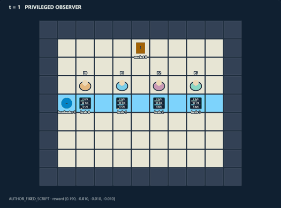
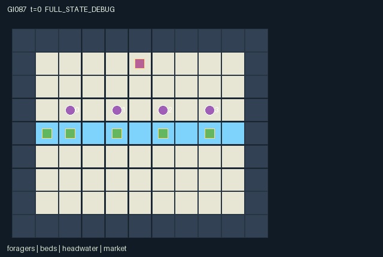

GI087 / SPATIAL
溢流果园
四块苗床共用上下游水流；采收消耗水并产生淤积，改变下游角色的机会。
Original saved demonstration
Recorded native state, often authored scripts or interventions; information scope and failures are preserved in the original provenance. This is a saved demonstration, not live browser play.

Release verification episode
Untrained uniform legal actions. Actual JAX state sampled along the full original episode; full-state debug camera. No human performance or learning claim.

Run this game
crucibles play --game 87
Start Python locally, then open the address printed by the terminal. Installation, multiplayer, takeover and keyboard controls →
Objective, rewards & ending
Exact task contract
{
"objective": "Before 96 steps, keep enough of the commons alive for every role to bank at least four fruit; individuals also earn private harvest and bank rewards.",
"natural_termination": "Joint success when every banked count reaches four; otherwise irreversible collapse when total living stock plus planted seed plus carried fruit is zero.",
"interaction": "Harvest consumes local water and emits silt that advects downstream, while cleaning, seed investment, headwater releases and temporary exclusion change other roles future harvest masks and payoffs.",
"observation_access": "Static layout, market, release lever and bank/release announcements are public. Agents, bags and bed condition/ownership are visible only within Manhattan distance 3. Only within distance 1 may roles work a bed or use a landmark."
}Declared per-step reward bounds: -4.0 to 10.0. Observability: partially_observable.
Rules
- Four beds share one west-to-east stream. Agents can move between them; a bed is worked from distance at most one.
- Harvest gives one fruit, consumes one local water and adds two silt. A carried bag holds at most four.
- Each bed sends one water downstream when it has at least two; up to one silt travels with that water, one reach per turn.
- Every fourth turn silt settles by one and a watered, clean living or seeded bed can regrow one fruit.
- Spend one carried fruit to clean two silt, plant a seed, release two headwater units, or claim a bed for six turns.
- A claim excludes other harvesters. Conflicting local work has one winner per bed with rotating priority.
- Bank fruit near [5,1]. All four must bank four to complete; losing every living stock, seed and carried fruit causes collapse.
- Local radius-three views hide distant bags and bed conditions. Bank announcements and release bells are public.
Original mechanism document (historical status wording retained)
# Spillway Orchard **Status: AUTHORED_NOT_EXECUTED.** A partially observed renewable-commons game with immediate private harvest/sale incentives and delayed downstream water and pollution costs. Agents may move upstream, invest in another bed, monopolize it temporarily, or preserve it for later shared provisioning. ## Rules and real cross-agent dependencies Beds at [2,4], [4,4], [6,4], [8,4] are connected in increasing x order. HARVEST requires a bag slot, positive stock and water, and either no active claim or a claim owned by that role. It removes one stock and one water, adds two silt (pollution), and puts one fruit in the harvester's bag. This immediately reduces resources available to other visitors and can withhold the next downstream water transfer. At each turn, one unit of water flows out of each bed holding at least two units. Incoming water is the previous bed's outgoing water; at most one silt accompanies each outgoing unit. All reaches update simultaneously, so a new packet travels only one bed per turn. The last bed drains off-map. Headwater receives one natural unit on even turns and two extra units per paid RELEASE near [1,4]. Local water is capped at three; silt at six. The caps represent spill/settling capacity rather than conserved unlimited reservoirs. CLEAN consumes one carried fruit and removes up to two local silt. SOW consumes one and stores one seed, at most two. On turns divisible by four, one silt settles; then a bed with water, silt at most one, space below stock five, and either living stock or an invested seed regrows one fruit while consuming one water and one stored seed if present. An emptied, unseeded bed never revives on its own. Selling the last recoverable fruit can therefore destroy a future harvest for everyone. STAKE spends one carried fruit to claim the nearest adjacent bed for six turns; another stake can replace the owner. Claims restrict harvesting only, not cleaning, sowing or later staking. Each bed admits only one non-release local work operation per turn. Contenders are ordered by (role - old_t) modulo four; there is no permanent lowest-ID privilege. A claim with one remaining turn still controls that turn's legal mask, then expires. The common market accepts as much of a bag as fits under the individual bank cap of eight. Completion needs each role to bank four, not just a large aggregate yield. This is a game objective, not an experimental reward gate. ## Kernel, information and rewards A=4, O=73, U=11, H=96. Coordinates are integer [x,y], with y increasing downward. All state leaves are fixed-shape int32, float32 or bool arrays; all observations and rewards are float32. All roles have identical action capabilities, but their initial upstream/downstream positions create unequal opportunities. To interact, a role uses the nearest bed within Manhattan distance one, breaking equal distance ties by lower bed index. Positions and bed condition are observed within distance three, including through the shallow channel; no wall-based line-of-sight is claimed. The fixed map, headwater and market positions are public. Bags are only local information. Bank amounts, total banked and the paid release bell are public announcements. Rendering visibility matches these observation rules. Order is: sanitize legal intents; choose one work operation per bed; apply harvest/investment/banking and claim expiry; inject headwater; move water and silt one reach; settle/regrow on fourth turns; resolve actual agent movement; assess terminal state. Movement cannot enter another role's old cell or win a contested common destination. Agents can stand in shallow water and on bed coordinates. Each live turn costs 0.01. Harvest earns its role 0.2. An accepted investment/release costs its role another 0.05 and one fruit. Each banked fruit earns its depositor 1. Joint completion pays each role 5; collapse costs each role 3. An unsuccessful contested work request spends no fruit and earns no harvest reward. These rules create immediate private returns, collective completion incentives, and both exploitable and investable externalities. The declared [-4,10] reward envelope and [0,1] observation bounds cover the kernel without implying expected performance. The binding addendum is implemented: a live input advances the scalar int32 clock by one; natural completion takes priority over the horizon. Already-terminal raw calls preserve the complete state, observation, clock, terminal causes and final event flags, return zero rewards and all-true dones. They are not extra gameplay transitions. The only legal terminal action is WAIT. Autoreset belongs to an external wrapper. No individual is removed from the world before joint completion. Invalid or out-of-range actions become WAIT; blocked cardinal directions remain legal attempted movements and may produce no motion. Each observation slice, entity position, active mask, visibility mask and displayed attribute is declared in manifest.json. scene.json repeats exactly the hash-bound map and declared channels. Its motion comes only from real state positions. A debug full-state view must remain distinct from role views. Public event channels are explicitly present in each role observation; local object/agent attributes are zero-masked together with a visible bit. A hidden entity is not a position hint. ## Literal source evidence - Local visible state is masked by physical distance: candidate.py:L21 — `ns["bed_visible"] = ap <= 3` - Claim changes another role legal harvest opportunities: candidate.py:L89 — `own = (s["claim_ttl"][target] == 0) | (s["claim_owner"][target] == jnp.arange(4))` - Rotating contention priority: candidate.py:L109 — `ranks = jnp.mod(jnp.arange(4) - s["t"], 4)` - Harvest externality and investment in the same condition variable: candidate.py:L128 — `pollution = jnp.clip(s["pollution"] + 2 * harvested - 2 * cleaned, 0, 6)` - Water moves only one downstream reach: candidate.py:L140 — `incoming_water = jnp.concatenate((jnp.zeros(1, dtype=jnp.int32), flow[:-1]))` - Pollution travels with actual outgoing water: candidate.py:L141 — `dirt_flow = jnp.minimum(pollution, 1) * flow` - Persistent regenerative dependence on survival or investment: candidate.py:L148 — `grows = season & (pollution <= 1) & (water > 0) & (stock < 5) & ((stock > 0) | (seedlings > 0))` - Shared task requires each participant: candidate.py:L164 — `success = jnp.all(banked >= 4)` - True unrecoverable ecological failure: candidate.py:L165 — `collapse = (jnp.sum(stock) + jnp.sum(seedlings) + jnp.sum(bag) == 0) & ~success` Method extents in this exact source: - `direction`: candidate.py:L12-L14. - `refresh`: candidate.py:L16-L22. - `reset`: candidate.py:L24-L60. - `observe`: candidate.py:L62-L80. - `local_bed`: candidate.py:L82-L85. - `legal_actions`: candidate.py:L87-L99. - `advance`: candidate.py:L101-L191. - `absorb`: candidate.py:L193-L196. - `raw_step`: candidate.py:L198-L199. ## Fixed witnesses and intended intervention differences Every script here is a local mechanism hypothesis, not a whole-task provisioning attempt. The harvest/clean pair shares the first action and all post-intervention waits, so later source-level differences can be traced to one investment choice. The claim script inspects a changed legal opportunity without deliberately issuing an illegal harvest. The release script spends a real carried fruit and observes the finite transport delay. No scripted outcome is an execution receipt. A successful-looking path in prose is only a prediction from the rules. Scripts that exercise local mechanisms intentionally do not assert whole-task completion. ## Invariants, variation and limits Declared nonnegativity covers stock, water, silt, planted seed, bags, banked fruit, claims, public totals and clock. Bounds from construction are stock<=5, water<=3, silt<=6, seedlings<=2, bag<=4, banked<=8 and claim_ttl<=6. Agent positions remain distinct. No assumption that every policy or seed can maintain the ecosystem is made. Changing natural inflow, reach order, pollution persistence or exclusion duration would change which partnerships and harvesting norms are useful; these are prospective variations, not measured variants. Partial observation is limited to a geometric neighborhood and public announcements; it is not a physically detailed fluid or optical simulator. Integer sign-bearing fields (for example no-owner=-1) remain exact int32 values. There is no design-specified int8 distribution to adapt. The external uint32 PRNG key is not duplicated as a state leaf. Reset and transition are deterministic in this authored instance; accepted keys are unused. ## Provenance and reference use This is an original authored kernel for initial window0, attempt00, in the train source stream. No prior candidate, project execution result, heldout layout, evaluation score, ranking or final test was read. No candidate or JAX was imported or run. The action lists are fixed hypotheses, not recorded trajectories. Interface/R0 checks, numerical parity, actual legality along the scripts, intervention replays, animation, training, solvability, optimality, strategic richness and meta-learning effects remain unestablished. Only supplied official references were used. JaxMARL's README informed the intended simultaneous multi-agent adapter boundary (agent-keyed dictionaries and __all__ belong in the later integration layer). Pgx's README informed the separation of explicit transition keys, legal masks and raw terminal state. Craftax's README informed the distinction between a world kernel, state-based rendering and an external reset wrapper. PureJaxRL is an algorithm implementation reference, not a game library; its performance statements are not evidence about this game. Craftax_Baselines/ppo_rnn.py was read only at its environment/reset wrapper interfaces; no PPO/network code or benchmark mechanics were copied. No upstream implementation or map is incorporated. These references are attributed in generation_record.json with exact supplied file hashes and upstream URLs. The copied community_delivery_requirements.json still lists IDs 82-85. The exact assigned design/request IDs 86-89 control this batch; the general interaction and presentation requirements are applied without rewriting that input. Actual dispatch identity, backend and usage evidence are retained by the coordinator, not invented here.
Commands
Roles & abilities
agent_0 forager initially beside headwater bed 0
agent_1 forager initially beside bed 1
agent_2 forager initially beside bed 2
agent_3 forager initially beside downstream bed 3
Observation permissions
Training receives only the original observation rows. Role cameras use declared visibility; debug cameras are explicitly marked. Local benchmark records log debug exposure and role takeover history.
Exact observation layout
[
{
"slice": [
0,
4
],
"meaning": "Observer identity one-hot",
"visibility": "self"
},
{
"slice": [
4,
9
],
"meaning": "Public t/96, done, success, collapse, release bell",
"visibility": "public"
},
{
"slice": [
9,
13
],
"meaning": "Public last-transition bank quantities per role /4",
"visibility": "public"
},
{
"slice": [
13,
17
],
"meaning": "Public cumulative bank quantities per role /8; their sum gives total_banked",
"visibility": "public"
},
{
"slice": [
17,
21
],
"meaning": "Headwater and market [x/10,y/8] coordinates in that order",
"visibility": "public"
},
{
"slice": [
21,
37
],
"meaning": "Four role slots of [x/10,y/8,bag/4,visible]; all data zero outside Manhattan radius 3",
"visibility": "local"
},
{
"slice": [
37,
73
],
"meaning": "Four bed slots of [x/10,y/8,stock/5,water/3,pollution/6,seedlings/2,claim_ttl/6,(owner+1)/4,visible]; data zero outside radius 3",
"visibility": "local"
}
]Entity visibility & attributes
[
{
"id": "foragers",
"kind": "agent",
"count": 4,
"position": [
"agent_pos"
],
"active": [
"agent_active"
],
"visibility": [
"agent_visible"
],
"attributes": [
{
"state_path": [
"bag"
],
"meaning": "Carried fruit, capacity 4",
"display": "bar"
}
]
},
{
"id": "beds",
"kind": "resource",
"count": 4,
"position": [
"bed_pos"
],
"active": [
"bed_active"
],
"visibility": [
"bed_visible"
],
"attributes": [
{
"state_path": [
"stock"
],
"meaning": "Living fruit stock, capacity 5",
"display": "bar"
},
{
"state_path": [
"water"
],
"meaning": "Available water, capacity 3",
"display": "bar"
},
{
"state_path": [
"pollution"
],
"meaning": "Silt load, capacity 6",
"display": "bar"
},
{
"state_path": [
"seedlings"
],
"meaning": "Invested seedlings, capacity 2",
"display": "number"
},
{
"state_path": [
"claim_ttl"
],
"meaning": "Exclusion turns remaining",
"display": "number"
},
{
"state_path": [
"claim_owner"
],
"meaning": "Claim owner; -1 means none",
"display": "category"
}
]
},
{
"id": "headwater",
"kind": "object",
"count": 1,
"position": [
"pump_pos"
],
"active": [
"pump_active"
],
"visibility": [
"pump_visible"
],
"attributes": []
},
{
"id": "market",
"kind": "landmark",
"count": 1,
"position": [
"market_pos"
],
"active": [
"market_active"
],
"visibility": [
"market_visible"
],
"attributes": []
}
]Actual verification & provenance
Per-game execution receipt
{
"game": "gi087",
"status": "PASS",
"verification_revision": 2,
"source_sha256": "6f14228953eee9e5140b00fdd3f8fd2cba536ead7a7b6fa2d324534a786fab31",
"seed": 20261101,
"runtime": {
"jax": "0.4.38",
"numpy": "1.26.4",
"devices": [
"TFRT_CPU_0"
]
},
"dimensions": {
"num_agents": 4,
"observation_size": 73,
"num_actions": 11,
"max_steps": 96
},
"checks": {
"eager_reset": {
"status": "PASS",
"seconds": 1.223942756652832
},
"observation_spaces_legal_masks": {
"status": "PASS",
"seconds": 0.6505837440490723
},
"eager_step": {
"status": "PASS",
"seconds": 1.027400016784668
},
"jit_reset": {
"status": "PASS",
"seconds": 0.17962884902954102
},
"jit_step": {
"status": "PASS",
"seconds": 0.7097864151000977
},
"eager_jit_integer_parity_float_measurement": {
"status": "PASS",
"seconds": 0.0
},
"jit_vmap_reset": {
"status": "PASS",
"seconds": 0.11576390266418457
},
"jit_vmap_step": {
"status": "PASS",
"seconds": 1.0696253776550293
},
"outer_autoreset_api": {
"status": "PASS",
"seconds": 1.0435731410980225
},
"full_original_horizon_episode_and_render": {
"status": "PASS",
"seconds": 3.4704720973968506
}
},
"human_scores": null,
"browser_controls": "PENDING",
"failures": [],
"elapsed_seconds": 10.009477615356445,
"float_parity_max_abs": 0.0,
"numerical_parity": "EXACT",
"raw_terminal_absorbing": "PASS",
"terminal_outer_reset": "PASS",
"episode_steps": 96,
"scripted_random_returns": [
-0.6099999863654375,
-0.06000000983476639,
0.7399999666959047,
-0.9599999785423279
],
"terminal": true,
"demo_information": "FULL_STATE_DEBUG",
"demo_frames": 25,
"render_roles_checked": 4
}Chromium control verification
{
"game": "gi087",
"status": "PASS",
"human_scores": null,
"engineering": true,
"checks": [
"catalog_selected_and_real_native_reset",
"dom_queue_and_native_step",
"second_participant_ownership_and_native_joint_step",
"all_roles_individually_controllable_no_role_cap",
"explicit_debug_camera",
"release_to_pure_ai_without_reset"
],
"seconds": 3.9973032474517822
}Original identity and file hashes
{
"id": 87,
"key": "gi087",
"title": "溢流果园",
"summary": "四块苗床共用上下游水流；采收消耗水并产生淤积，改变下游角色的机会。",
"tags": [
"生态公地",
"上下游依赖"
],
"family": "spatial",
"dimensions": {
"num_agents": 4,
"observation_size": 73,
"num_actions": 11,
"max_steps": 96
},
"source_sha256": "6f14228953eee9e5140b00fdd3f8fd2cba536ead7a7b6fa2d324534a786fab31",
"manifest_sha256": "07b5e89e2bcff53e196c90f8ebe122266c5056c8d749b88ac4a02b0da7bf95e6",
"files": [
{
"file": "candidate.py",
"sha256": "6f14228953eee9e5140b00fdd3f8fd2cba536ead7a7b6fa2d324534a786fab31",
"bytes": 11248,
"origin": "work/exp_2/game_incubator_v3/community_games222_225_visualization_root222_v1/native154_candidate/registry/v2/games/game-v3-00087/candidate.py"
},
{
"file": "manifest.json",
"sha256": "07b5e89e2bcff53e196c90f8ebe122266c5056c8d749b88ac4a02b0da7bf95e6",
"bytes": 12324,
"origin": "work/exp_2/game_incubator_v3/community_games222_225_visualization_root222_v1/native154_candidate/registry/v2/games/game-v3-00087/manifest.json"
},
{
"file": "scene.json",
"sha256": "26473b5911f6a530e49c11f85598bdded7d7d30c61e316da994806d23d797445",
"bytes": 6493,
"origin": "work/exp_2/game_incubator_v3/community_games222_225_visualization_root222_v1/native154_candidate/registry/v2/games/game-v3-00087/scene.json"
},
{
"file": "mechanism.md",
"sha256": "1c445ce492ea5cdbbcb49f1af5aa50196715e997358d498711c29317b6deaffd",
"bytes": 10459,
"origin": "work/exp_2/game_incubator_v3/sources/game-v3-00087/attempt_00/mechanism.md"
},
{
"file": "playthrough.json",
"sha256": "db78cdc6ee43ec7d397f3051eef35af7622ea9a928e4965855361377080eb842",
"bytes": 8819,
"origin": "work/exp_2/game_incubator_v3/sources/game-v3-00087/attempt_00/playthrough.json"
}
],
"original_status": "NATIVE154_REFERENCE",
"original_saved_replay": true,
"release_validation": "PASS",
"human_scores": null,
"browser_validation": "PASS"
}